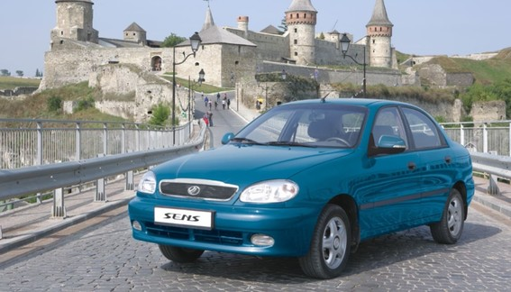

ЗАЗ Sens лидер продаж Украинского автопрома по результатам 2014 года. 13 февраля 2015
12 февраля подвел свои итоги Всеукраинский рейтинг «Автомобиль года в Украине 2015». В этом году в рамках акции организаторами были отмечены бренды и модели, которые показали наилучшие продажи в Украине в 2014 году.
По условиям акции, победители определялись в соответствии с объемами продаж моделей за прошедший год. Таким образом, голосовали за победителя рейтинга непосредственно автовладельцы, отдавая предпочтение при покупке автомобиля тому или иному бренду.
По результатам рейтинга модель ЗАЗ Sens, становится самой продаваемой моделью украинского автопрома! За 12 месяцев прошлого года украинские потребители приобрели более 3-х тысяч автомобилей модели ЗАЗ Sens. Модель стала лидером продаж в 16 областях Украины, что еще раз подтверждает широкое народное признание! Стоит отметить, что модель второй раз занимает топовые позиции рейтинга: в 2013 году модель ЗАЗ Sens была отмечена номинацией «Абсолютный лидер рынка»
«Достигнутый результат является подтверждением доверия наших покупателей к бренду ЗАЗ». – Комментирует успешность бренда Андрей Залуцкий, Генеральный директор Филиала «АвтоЗАЗ - сервис».
По мнению Андрея Залуцкого, успех ЗАЗ Sens в 2014 году закономерен. Модель уверенно держит репутацию надежного автомобиля – качественного и неприхотливого в использовании, что проверено годами эксплуатации в условиях отечественных дорог. К тому же, модель остается одной из самых доступных на рынке.
Напомним, что в 2014 году все авто модельного ряда ЗАЗ сертифицированы согласно экологическому стандарту Евро-4.
На автомобили ЗАЗ распространяется сервисная гарантия в 3 года, или 100 тыс. км пробега. При этом межсервисный интервал составляет 15 тыс. км, что соответствует европейским стандартам гарантийной политики обслуживания автомобилей.
В сервисной сети УкрАВТО можно провести регламентное техническое обслуживание на 10% дешевле. 3 февраля 2015
Только в феврале и марте этого года в сети предприятий УкрАВТО можно пройти регламентное ТО для автомобилей марок ZAZ, Opel, KIA, Chevrolet, Chery, TATA, LADA, на которые распространяется гарантия с выгодой до 10%.

В условиях, когда дорожает практически все, владельцы автомобилей ZAZ, Opel, KIA, Chevrolet, Chery, TATA, LADA, все чаще обращают внимание на специальные предложения, которые регулярно появляются в сети дилерских центров Украинской Автомобильной Корпорации. С учетом того, что своевременное техническое обслуживание для автовладельца относится к предметам первой необходимости, в первые дни последнего месяца зимы в сети УкрАВТО стартовала акция: “Заботясь о главном!”
Согласитесь, управлять и прислушиваться к автомобилю – это одно, а когда ваш автомобиль проверят опытные специалисты, с использованием всех необходимых технических средств, начиная c компьютерной диагностикb и заканчивая проверкой уровня технических жидкостей, это совсем другое! Поэтому, акционное предложение позволяет владельцам автомобилей брендов ZAZ, Opel, KIA, Chevrolet, Chery, TATA, LADA, на которые распространяется гарантия, получить дисконт 10% на работы и до 12% на сопутствующие материалы. Специальное предложение будет действовать в период с 01 февраля по 31 марта 2015 года во всей дилерской сети УкрАВТО.
Узнать подробности и условия специального сервисного предложения и записаться на сервис, для прохождения технического обслуживания можно в ближайшем дилерском центре Корпорации УкрАВТО. Информацию об адресах и контактных телефонах столов заказов можно узнать, позвонив на «горячую» линию по номеру 0 800 507 717 или на сайте www.ukravto.ua
* Действие карт лояльности «СarMan @ CarWoman» и другие действующие на момент проведения акции предложения на все вышеуказанные услуги не распространяются и не суммируются.
ЗАЗ Sens самый продаваемый автомобиль 2014 года! 12 января 2015
По результатам 2014 года ЗАЗ Sens второй год подряд становится лидером продаж

Традиционно в первые дни января подводятся итоги автомобильного рынка Украины. По данным Ассоциации автопроизводителей Украины «Укравтопром» - модель ЗАЗ Sens, как и в 2013 году, становится самой продаваемой моделью на рынке страны! За 12 месяцев прошлого года был реализован 3 291 автомобиль модели ЗАЗ Sens. Модель стала лидером продаж в 16 областях Украины!
Так же популярны на рынке были и другие модели бренда ЗАЗ - ЗАЗ VIDA і ЗАЗ Lanos, они вошли в ТОП-пять самых продаваемых моделей. Четвертое и пятое место за представителями бренда ЗАЗ – VIDA и Lanos, с показателями соответственно 2 186 и 2 096 единиц.
Модели бренда ЗАЗ подтвердили репутацию качественных и одних из самых доступных автомобилей на рынке Украины, которые выбирают наши соотечественники. «В 2014 году, очень непростом для всей страны и автомобильного рынка, мы смогли закрепить успех бренда ЗАЗ, чем бесспорно очень гордимся», комментирует продемонстрированные результаты Генеральный директор Филиала «АвтоЗАЗ-сервис» Андрей Залуцкий.
Важными составляющими успеха ЗАЗ есть постоянная работа производителя по расширению комплектаций автомобилей, введению новых опций и самое главное – постоянная работа по поддержанию качества производства на высоком уровне. И в нынешнем году, во чтобы то ни стало, данная работа будет продолжаться.
Напомним, что на автомобили ЗАЗ распространяется сервисная гарантия в 3 года, или 100 тыс. км пробега. При этом межсервисный интервал составляет 15 тыс. км, что соответствует европейским стандартам гарантийной политики обслуживания автомобилей.